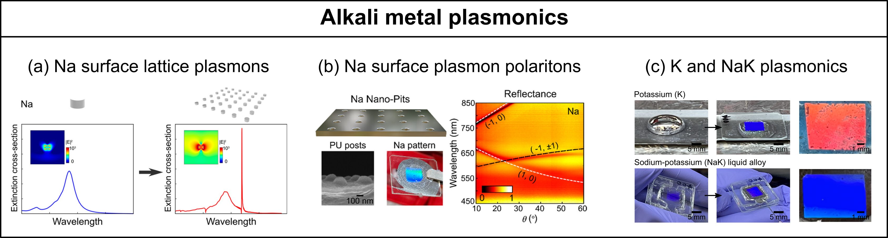
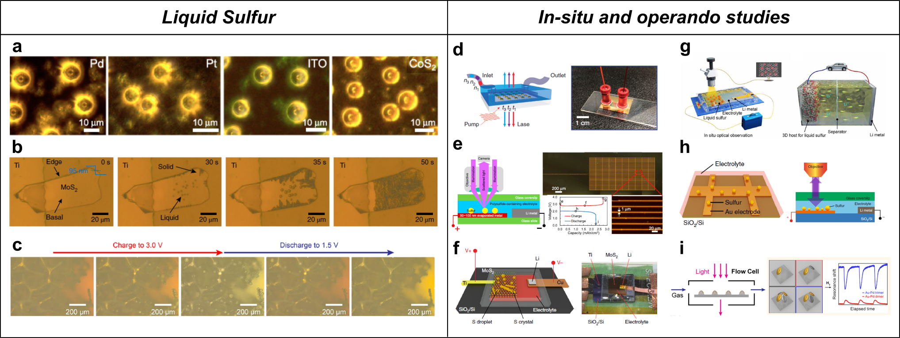

Research Yang Group
Energy Materials Lab
We perform in-situ and operando studies of energy materials and rechargeable batteries to understand the nanoscale fundamentals.
We develop novel materials and scalable processes for next-generation energy storage devices.
Current Research Focus
1. Alkali metal plasmonics
|  |
Related Papers
Ultrafast plasmon dynamics of low-loss sodium metasurfacesC. Kocoj, X. Xie, H. Jiang, S. Li, S. Sarker, A. Yang, P. Guo
ACS Nano 19, 27310-27317 (2025)
Low-loss plasmonics with nanostructured potassium and sodium-potassium liquid alloys [PDF][SI]
Z. Gao, A. Wildenborg, C.A.Kocoj, E. Liu, C. Sheofsky, A. Rawashdeh, H. Qu, P. Guo, J.Y. Suh, A. Yang
Nano Letters 23 (15), 7150-7156 (2023)
High-quality surface plasmon polaritons in large-area sodium nanostructures [PDF][SI]
A. Rawashdeh*, A. Wildenborg*, E. Liu, Z. Gao, D.A. Czaplewski, H. Qu, J.Y. Suh, A. Yang
Nano Letters 23 (2), 469-475 (2023)
Sodium surface lattice plasmons [PDF][SI]
A. Rawashdeh, S. Lupa, W. Welch and A. Yang
The Journal of Physical Chemistry C 125, 25148 (2021)
2. In-situ and operando studies of energy materials and rechargeable batteries
|  |
Related Papers
Chemically generated liquid sulfur droplets at room and sub-zero temperatures [PDF][SI]P. Subramaniam-Venkatesh, Z. Gao, H. Hao, X. Xie, T. Karrar, Z. Xia, E. Spielman-Sun, X. Wang, X. Zheng, A. Yang
ACS Nano (2025)
Electrochemical generation of liquid and solid sulfur on two-dimensional layered materials with distinct areal capacities
A. Yang*, G. Zhou*, X. Kong, R.A. Vila, A. Pei, Y. Wu, X. Yu, X. Zheng, C.-L. Wu, B. Liu, H. Chen, Y. Xu, D. Chen, Y. Li, S. Fakra, H.Y. Hwang, J. Qin, S. Chu, Y. Cui
Nature Nanotechnology 15, 231-237 (2020)
See also:
D. Zhou, G. Wang, Supercool Sulfur
A. Yang, Liquid or solid sulfur matters
Supercooled liquid sulfur maintained in three-dimensional current collector for high-performance Li-S batteries
G. Zhou*, A. Yang*, G. Gao*, X. Yu, J. Xu, C. Liu, Y. Ye, A. Pei, Y. Wu, Y. Peng, Y. Li, Z. Liang, K. Liu, L.-W. Wang, Y. Cui
Science Advances 6, 21, eaay5098 (2020)
Electrotunable liquid sulfur microdroplets
G. Zhou*, A. Yang*, Y. Wang, G. Gao, A. Pei, X. Yu, Y. Zhu, L. Zong, B. Liu, J. Xu, N. Liu, J. Zhang, Y. Li, L.-W. Wang, H.Y. Hwang, M.L. Brongersma, S. Chu, Y. Cui
Nature Communications 11, 606 (2020)
Direct electrochemical generation of super-cooled sulphur microdroplets well below its melting temperature
N. Liu*, G. Zhou*, A. Yang, X. Yu, F. Shi, J. Sun, J. Zhang, B. Liu, C.-L. Wu, X. Tao, Y. Sun, Y. Cui, S. Chu
Proceedings of the National Academy of Sciences 116(3), 765-770 (2019)
Meet Our Sponsors

|